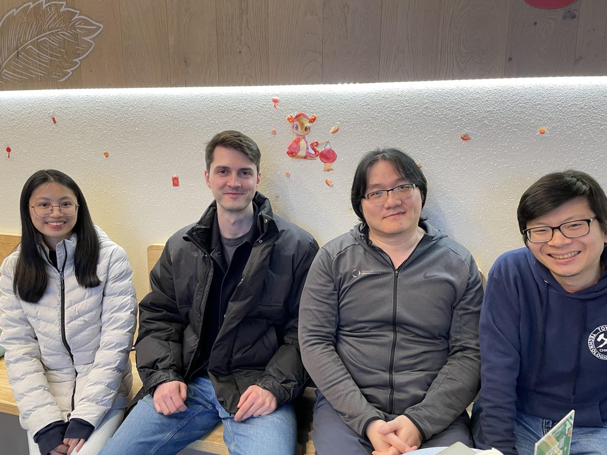
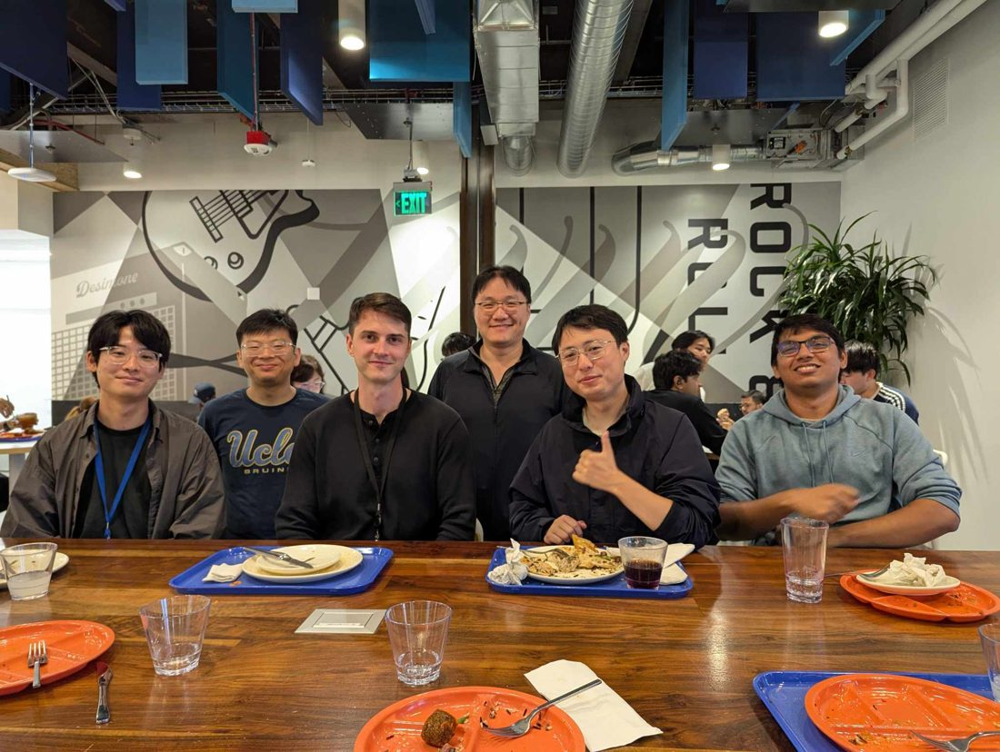
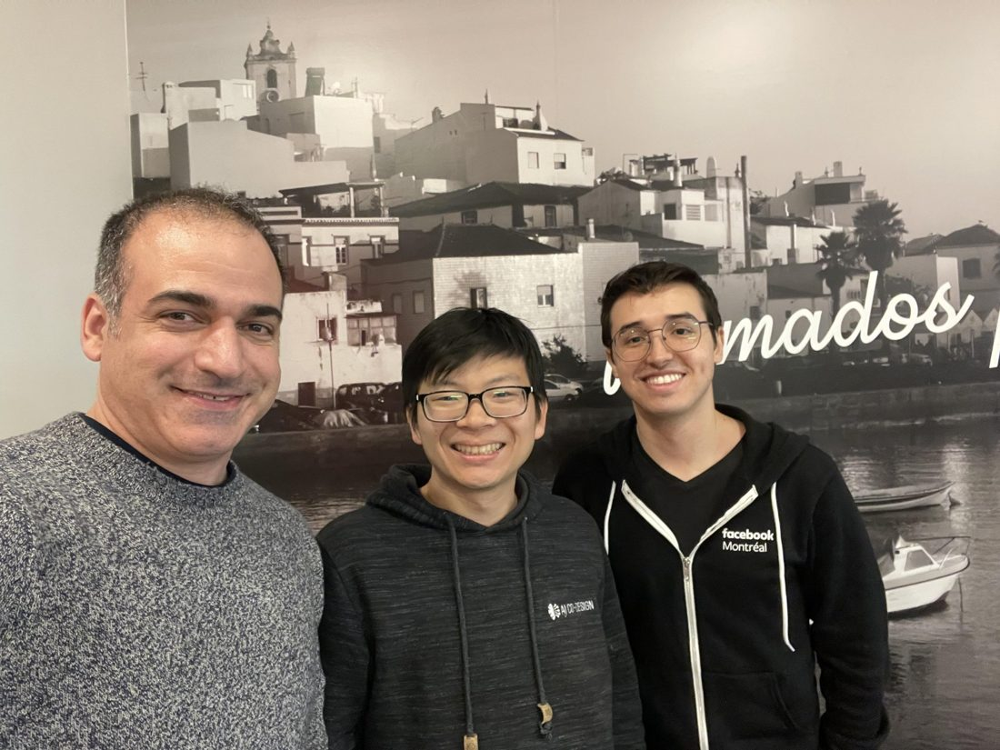

Beyond deep technical contributions, I have found mentorship and collaboration to be the most rewarding and personally impactful aspects of my career. My best collaborations have arisen from bringing diverse people together with complementary skillsets and perspectives to work closely towards a shared goal. This includes all aspects of the research-to-production pipeline, including brainstorming, code and code review, theoretical analysis, and experimental design and analysis.
Good research matures slowly, and tight collaboration is where good research grows because it forces an idea to be tested against other people’s judgment again and again until it matures. This “mind melding” or kindred-spiritedness enables small teams to do far more than each individual could accomplish alone.